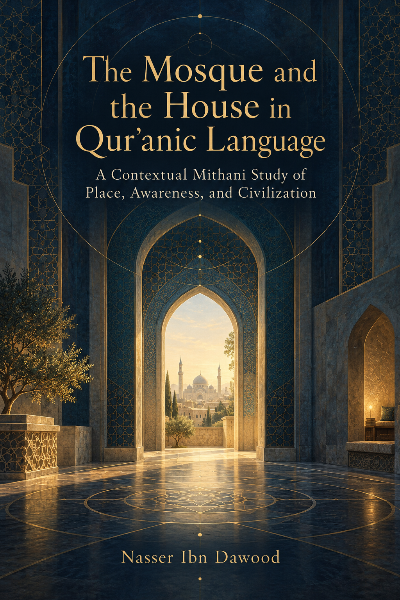

127. The Mosque and the House in Quranic Language

A contextual and structural study of place, awareness, and civilization, distinguishing spatial meanings from interpretive models.
Condensed conceptual English adaptation; the Arabic text remains the primary source for detailed analysis and references.
قراءة PDF داخل الموقع / Read the PDF on this website
جارٍ تجهيز القارئ… / Preparing the reader…
Book Summary, Table of Contents & Excerpt
The Mosque and the House in Quranic Language
A contextual and structural study of place, awareness, and civilization
Nasser Ibn Dawood
Condensed conceptual adaptation from the Arabic manuscript
I. The Global Knowledge Manifesto
Knowledge is a universal right. The author firmly believes that wisdom should not be locked behind paywalls or language barriers.
Global access policy. All books in this library are available free of charge in multiple digital formats: PDF, HTML, DOCX, and TXT.
The digital library. As of early 2026, the collection hosts 236 volumes: 118 in Arabic and 118 in English. The collection is prepared for AI-assisted research and digital archiving.
Official platforms. Main website · GitHub repository
This manifesto is reproduced here as supplied by the author for this condensed edition.
II. Translator’s Note: The Bridge of Meaning
This English edition is a condensed conceptual adaptation. It is not a word-for-word translation, but an extraction of the book’s central argument. It presents the main framework in accessible English and omits much of the Arabic edition’s detailed linguistic discussion and source-by-source documentation.
For academic research, the Arabic manuscript remains the primary source for the full linguistic analysis, detailed discussion, and complete bibliography.
This adaptation preserves the methodological status assigned to claims in the Arabic edition. A claim marked OPEN remains open. A CANDIDATE is a provisional result. A RESISTED or STRONGLY RESISTED claim is not revived by simplification. A CLOSED result is closed only within its declared scope. The aim is clarity without inflating the evidence.
Key Qur’anic terms are sometimes retained in transliteration—such as nafs, tawaffī, barzakh, and baʿth—when a single English equivalent would narrow the question prematurely. Qur’anic references are given by surah and verse. English renderings of Qur’anic wording in this edition are working glosses; they do not replace the Arabic text.
How to read this book
The study distinguishes five levels:
● Text: the Qur’anic wording, its form, and its location.
● Explanation: a linguistic, grammatical, or historical account that should identify its basis.
● Inference: a conclusion drawn from a set of verses, their contexts, and their relations.
● Hypothesis: a possible extension that needs further testing.
● Model: a practical framework for examining a hypothesis; it does not claim to be the verse’s exclusive meaning.
The tags used below mark these levels: [T] text, [E] explanation, [I] inference, [H] hypothesis, and [M] model. A symbolic reading is not presented as a Qur’anic definition merely because it is suggestive or spiritually useful.
The book uses QCROS as a governance protocol for knowledge claims: Qur’anic corpus, context, relations, opposing evidence, and status. The method begins with a claim, gathers the relevant wording, reads its setting, compares related uses, tests contrary evidence, and records what the evidence can currently support.
1. The question and the scope
This study examines the Qur’anic network of masjid/masājid and bayt/buyūt—mosque and mosques, house and houses—and their connections with prostration, direction, remembrance, retreat, pilgrimage, construction, purification, security, dwelling, and entry.
The central question is whether this network allows us to read a place both as a location and through the function the Qur’anic context assigns to it, and whether that relationship can open a disciplined reflection on human awareness. The answer must preserve both sides of the question. The Qur’an addresses people with guidance; its named places are not abstract coordinates without purpose. Yet it does name places and does not thereby turn every place into a symbol of the mind.
The book therefore rejects the unqualified statement, “The Qur’an does not specify geographical places; it specifies functions.” The Qur’an names Bakkah, the Sacred House, the valley without cultivation, ʿArafāt, and the Sacred Monument, among other places. In the same passages, these places are joined to worship, security, provision, remembrance, or pilgrimage. The more accurate thesis is this: the Qur’anic address guides the human being, while place in the passages studied has a presence and a context-defined function. The relationship may invite reflection on the human interior, but such reflection must not erase the place.
For example, the House is described as a place of return and security and is associated with those who circumambulate, devote themselves, bow, and prostrate (2:125). Abraham’s prayer recalls a valley without cultivation beside the Sacred House and asks for prayer, the inclination of people’s hearts, and provision (14:37). Place and function occur together; neither has to replace the other.
The study does not attempt a history of mosque architecture, settle detailed legal rulings, or present an empirical theory of consciousness. It asks what the Qur’anic wording and its network support, then marks the limits of further interpretation.
2. Reading in layers and the Mithani method
The Qur’an speaks of clear foundational verses and others described as mutashābih (3:7), and it describes the Book as mutashābih mathānī (39:23). This study takes such passages as a warrant for reading verses in relation to one another. It does not infer that every verse contains a fixed number of hidden meanings or that every inward reading is valid.
The author’s Mithani system is used as a method for exploring paired, structural, linguistic, and—in some of the author’s work—numerical relations. A proposed pairing is a starting question. It must be tested: Does it respect the word’s forms? Does it recur across relevant contexts? Does it explain contrary examples? Can another reader reproduce the reasoning? A pattern that cannot pass those tests remains a proposal.